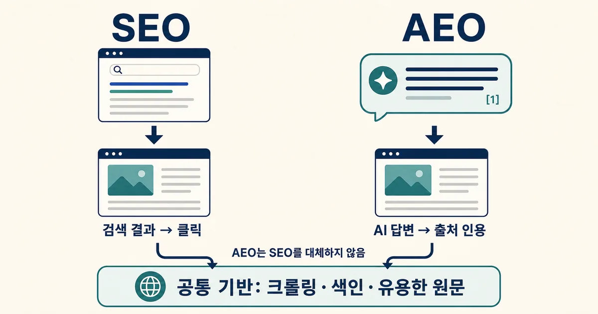
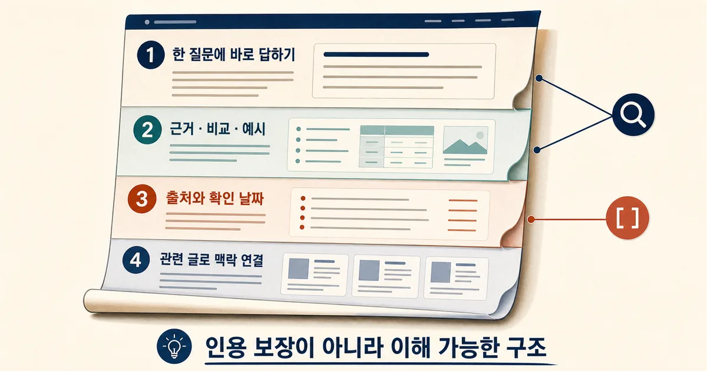
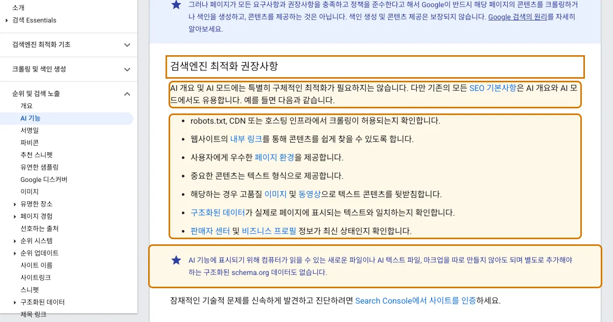

2026. 8. 7 (금) · 약 12분
검색 결과 1페이지에 올라가는 일과 AI 답변 안에서 출처로 선택되는 일은 얼핏 같은 목표처럼 보인다. 그런데 방문 경로는 다르다. 전자는 제목을 보고 클릭하게 만들고, 후자는 답변을 뒷받침할 근거로 문장이 먼저 쓰일 수 있다. Cloudflare가 8월 6일 공개한 AEO 도구는 이 차이를 인용률과 노출 위치로 측정하겠다고 나섰다. 흥미로운 점은 Google의 설명이 훨씬 담백하다는 데 있다. AI 개요와 AI 모드에 들어가기 위한 특별한 파일이나 새 마크업은 필요하지 않으며, 기존 SEO의 크롤링·색인·유용한 원문이 여전히 바닥이라는 것이다. AEO가 SEO를 대체하는 유행어인지, 실제로 달라진 측정 문제인지 두 회사의 공식 자료와 Bing의 인용 보고서를 함께 놓고 살펴봤다.
오늘의 핵심뉴스
심층 분석 · Cloudflare Blog · 2026. 8. 6
Cloudflare, AI 답변 인용과 에이전트 준비도를 측정하는 AEO 도구 공개
Cloudflare는 AI 에이전트가 사이트를 읽고 행동할 수 있는 준비도와 주요 AI 답변에서 브랜드·페이지가 인용되는 빈도를 측정하는 AEO 도구를 공개했다. 다만 Google은 AI 검색 노출에 특별한 파일이나 별도 최적화가 필요하지 않다고 설명하므로, 새로운 측정층과 기존 SEO 기반을 구분해서 봐야 한다.
검색 순위와 AI 인용은 같은 목표가 아니다
Cloudflare가 말하는 AEO는 Answer Engine Optimization의 약자다. 기존 검색이 결과 목록에서 페이지 순위와 클릭을 중심으로 봤다면, AEO는 Claude나 ChatGPT 같은 답변형 서비스가 어떤 질문에서 특정 사이트를 언급하고 출처로 연결하는지를 본다. Cloudflare의 새 도구는 예상 질문을 여러 AI 서비스에 보내 인용률, 언급률, 답변 안의 노출 위치와 경쟁 사이트 대비 점유를 관찰한다. 회사가 ‘웹 요청의 절반 미만만 사람이 보낸다’고 설명한 수치는 Cloudflare가 자사 네트워크에서 본 주장이지, 모든 사이트의 보편 비율로 확대해 읽어서는 안 된다. 그래도 클릭 전 단계에서 문서가 답변 재료로 쓰이는지 별도로 관찰하려는 변화는 분명하다.

여기서 AEO를 SEO 다음 세대의 완전한 대체품으로 해석하면 방향이 틀어진다. Google은 AI 개요와 AI 모드에 표시되기 위한 추가 기술 요구사항이나 특별한 최적화가 없다고 명시한다. 페이지가 색인돼 스니펫과 함께 검색에 나올 수 있어야 하고, 크롤링 허용, 내부 링크, 페이지 경험, 텍스트로 제공된 핵심 내용, 실제 본문과 맞는 구조화된 데이터가 중요하다. 이름은 새로워졌지만 검색 시스템이 문서를 발견하고 이해하는 바닥은 그대로다.
새로 생긴 것은 최적화 비법보다 측정 지점이다
Cloudflare의 Agent Readiness는 robots.txt와 sitemap 유무만 보지 않는다. AI 에이전트가 읽기 쉬운 원문, 문서 메타데이터, API와 인증 방식, MCP나 WebMCP 같은 행동 인터페이스까지 사이트가 어디까지 준비됐는지 확인한다. 반면 AEO 보고서는 답변 서비스가 실제로 페이지를 인용했는지와 크롤러·추천 방문이 얼마나 들어왔는지를 보여 주려 한다. 전자는 읽고 행동할 수 있는 기반, 후자는 답변에서 발견되는 결과에 가깝다. 둘을 섞으면 준비도 점수가 높다는 이유만으로 인용을 보장한다고 오해하기 쉽다.
| 구분 | 주로 보는 결과 | 먼저 확인할 기반 |
|---|---|---|
| 기존 SEO | 검색 노출·순위·클릭 | 크롤링, 색인, 검색 의도, 페이지 품질 |
| AEO | AI 답변의 언급·출처 인용·인용 위치 | 명확한 답, 검증 가능한 근거, 문서 구조 |
| 공통 | 사용자가 필요한 답에 도달했는가 | 유용한 원문, 내부 연결, 최신 정보, 중복 정리 |
Bing Webmaster Tools의 AI Performance도 같은 변화를 다른 방식으로 보여 준다. 총 인용 수, 인용된 페이지 수, 답변을 만든 질문인 grounding queries, 페이지별 인용 추이를 제공한다. Search Console의 노출과 클릭만으로는 ‘답변에는 쓰였지만 클릭은 적은 문서’를 구분하기 어렵지만, 인용 보고서를 함께 보면 어느 질문에서 페이지가 근거 역할을 했는지 더 가까이 볼 수 있다. 이 데이터는 순위 점수가 아니라 관찰 신호다. 인용 수가 늘었다고 전환이나 신뢰가 자동으로 늘었다고 단정할 수는 없다.
AI가 읽기 쉬운 글은 사람에게도 덜 모호하다
실제 수정은 거창한 AI 전용 문서보다 한 페이지의 질문을 선명하게 만드는 데서 시작한다. 제목이 ‘AI 검색 총정리’인데 본문이 검색 광고, 챗봇, SEO, 모델 학습을 한꺼번에 다루면 어느 질문의 근거인지 흐려진다. 반대로 첫 두 문단에서 ‘AEO는 SEO의 대체가 아니라 AI 답변 인용을 관찰하는 층’이라고 답하고, 공식 문서 차이와 적용 예를 이어 붙이면 사람도 글의 범위를 빨리 잡는다.
한 페이지 안에서 답과 근거가 이어져야 한다

비교표는 단순 장식보다 문장을 분해하는 데 유용하다. 예를 들어 ‘AEO와 SEO는 비슷하지만 다르다’는 문장만 두면 차이를 재사용하기 어렵다. 대신 노출 결과, 공통 기반, 측정 도구를 열로 나누면 어느 항목이 공식 사실이고 어느 부분이 운영 판단인지 구분된다. 수치나 날짜가 바뀔 수 있는 문단에는 확인 날짜와 원문 링크를 가까이 두는 편이 좋다. AI가 읽기 때문이 아니라, 독자가 나중에 돌아와도 변화한 지점을 다시 확인할 수 있기 때문이다.
Google 문서는 AEO 만능론에 선을 긋는다
Google 공식 문서의 문장은 단호하다. AI 개요와 AI 모드에는 특별히 구체적인 최적화가 필요하지 않고 기존 SEO 기본사항이 그대로 유용하다. 컴퓨터가 읽을 수 있는 새로운 파일, AI 텍스트 파일, 별도의 마크업이나 추가 schema.org 데이터도 요구하지 않는다. llms.txt나 특정 스키마를 붙이면 Google AI 검색에 곧바로 들어간다는 식의 설명과는 거리가 있다.

그렇다고 아무것도 바뀌지 않았다는 뜻은 아니다. 답변형 검색은 한 번의 질문을 여러 하위 질문으로 확장해 다양한 페이지를 찾을 수 있다. 페이지가 넓은 키워드를 반복하는 대신 구체적인 비교와 근거를 갖추면 더 세분된 질문과 연결될 여지가 생긴다. 다만 색인과 인용은 모두 보장되지 않는다. 문서 요건을 지킨 페이지도 크롤링·색인·노출되지 않을 수 있다는 Google의 단서까지 함께 읽어야 한다.
중복 글과 흐린 검색 의도가 먼저 발목을 잡는다
Bing은 중복 콘텐츠를 자동 처벌 대상으로 단정하지 않지만, 비슷한 문서가 여러 URL에 흩어지면 어느 페이지가 대표인지 신호가 갈리고 크롤링과 인용 선택이 느려질 수 있다고 설명한다. 오래된 글 두 편을 합쳐 새 글을 만들었다면 제목만 바꿔 셋을 모두 남기기보다 새 글이 원문의 핵심을 충분히 흡수했는지 확인하고 대표 URL을 분명히 해야 한다. 같은 질문을 조금씩 바꾼 글을 늘리는 방식은 검색 결과에서도, AI 답변의 출처 후보에서도 문서의 역할을 흐린다.
- 제목과 첫 두 문단이 한 가지 질문에 같은 답을 주는지 확인한다.
- 주장 가까이에 공식 출처, 비교 기준, 확인 날짜를 둔다.
- 표·이미지는 문장을 반복하지 말고 차이·구조·근거를 보여 준다.
- 같은 검색 의도를 가진 글은 대표 페이지로 통합하고 내부 링크를 정리한다.
- Search Console의 노출·클릭과 AI 인용 데이터를 서로 다른 결과로 기록한다.
무엇을 측정해야 과장에 빠지지 않을까
Google의 AI 기능 노출은 현재 Search Console의 웹 검색 실적에 함께 집계된다. 따라서 Google 안에서 AI 개요만 떼어 본 독립 인용률로 해석하면 안 된다. 반면 Bing은 AI 답변의 인용과 grounding queries를 별도 화면에서 보여 준다. Cloudflare AEO는 여러 AI 서비스의 언급과 출처 인용을 비교하려는 조기 접근 도구다. 세 도구는 같은 숫자를 재는 것이 아니므로 한 그래프에 합쳐 성과 점수처럼 만들기보다, 발견·클릭·인용이라는 서로 다른 단계로 읽는 편이 안전하다.
| 도구 | 확인 가능한 질문 | 주의할 한계 |
|---|---|---|
| Google Search Console | 웹 검색에서 노출과 클릭이 어떻게 변했는가 | AI 개요·AI 모드가 웹 실적에 함께 집계됨 |
| Bing AI Performance | 어떤 질문과 페이지가 AI 답변에 인용됐는가 | 공개 미리보기 지표이며 전환을 뜻하지 않음 |
| Cloudflare AEO | 주요 답변 서비스에서 언급·인용 위치가 어떻게 보이는가 | 조기 접근 도구이며 Cloudflare의 측정 범위에 한정됨 |
Cloudflare의 도구는 아직 조기 접근 단계이고, 특정 서비스의 답변을 반복 측정해도 모든 사용자·지역·시점의 결과를 대표하지는 않는다. AEO 점수를 하나의 새 순위로 받아들이기보다, 어떤 질문에서 근거가 부족한지 찾는 진단 도구로 쓰는 편이 맞다. 검색 노출이 낮다면 먼저 색인과 검색 의도를, 검색 노출은 충분한데 인용이 약하다면 직접 답변·근거·출처 구조와 중복 문서를 차례로 점검할 수 있다.
Cloudflare의 AEO 공개 글에서 새 측정 범위를 확인하고, Google Search Central에서 AI 기능의 기술 요구사항과 특별한 마크업이 필요 없다는 기준을 대조했다. Bing의 AI Performance와 중복 콘텐츠 안내는 실제로 관찰할 지표와 문서 통합 이유를 보완한다.
참고한 자료
AEO의 쓸모는 검색 원칙을 새로 발명하는 데 있지 않다. 검색 결과 클릭만 보던 시야에 ‘어떤 질문에서 내 페이지가 근거로 쓰였는가’를 더하는 데 있다. 먼저 한 페이지가 한 질문에 분명히 답하도록 만들고, 비교·근거·확인 날짜를 같은 흐름 안에 둔 뒤 중복 글을 정리하는 편이 새 파일이나 스키마를 찾는 것보다 먼저다. 그다음 Search Console의 노출·클릭과 Bing의 인용 데이터를 나란히 보면, 검색 순위는 유지되는데 AI 답변에서는 빠지는 페이지와 그 반대인 페이지를 구분할 수 있다. 이번 주에는 기존 글 한 편만 골라 첫 문단의 답, 근거 출처, 확인 날짜, 겹치는 글을 함께 점검해 두자.